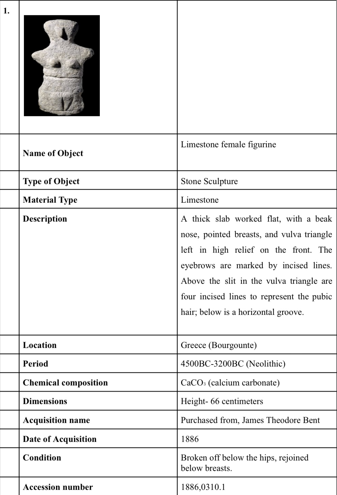
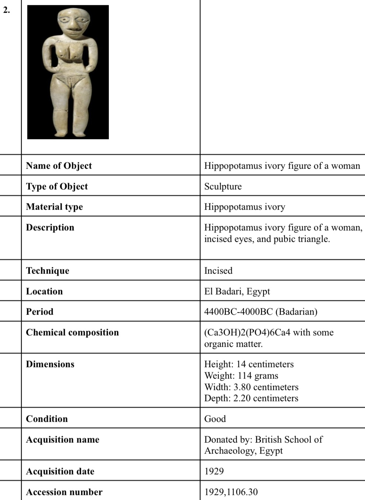
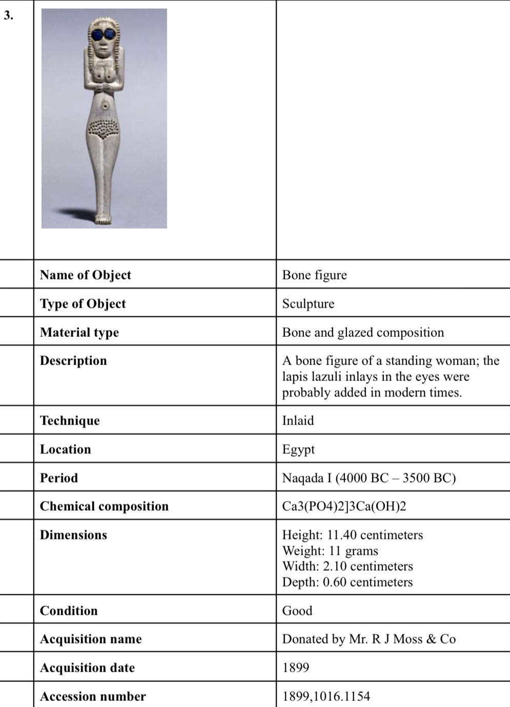
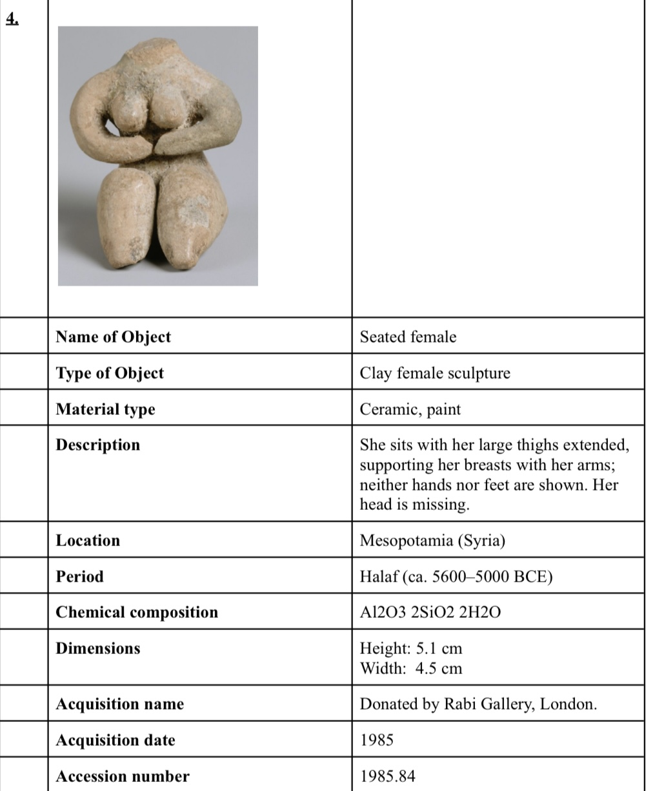
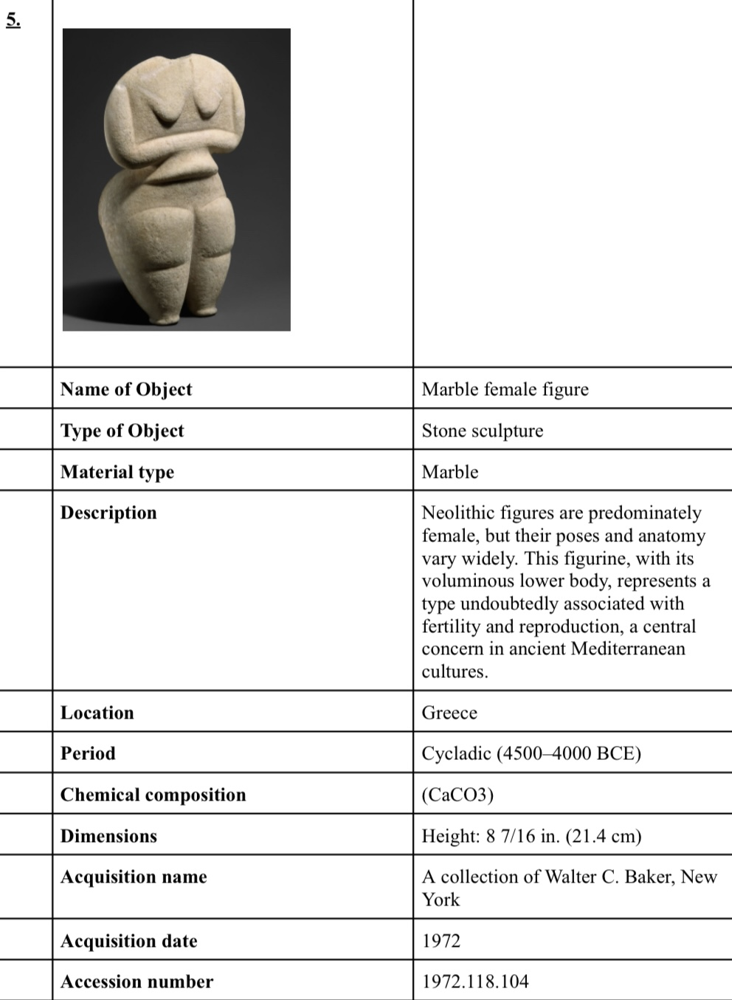
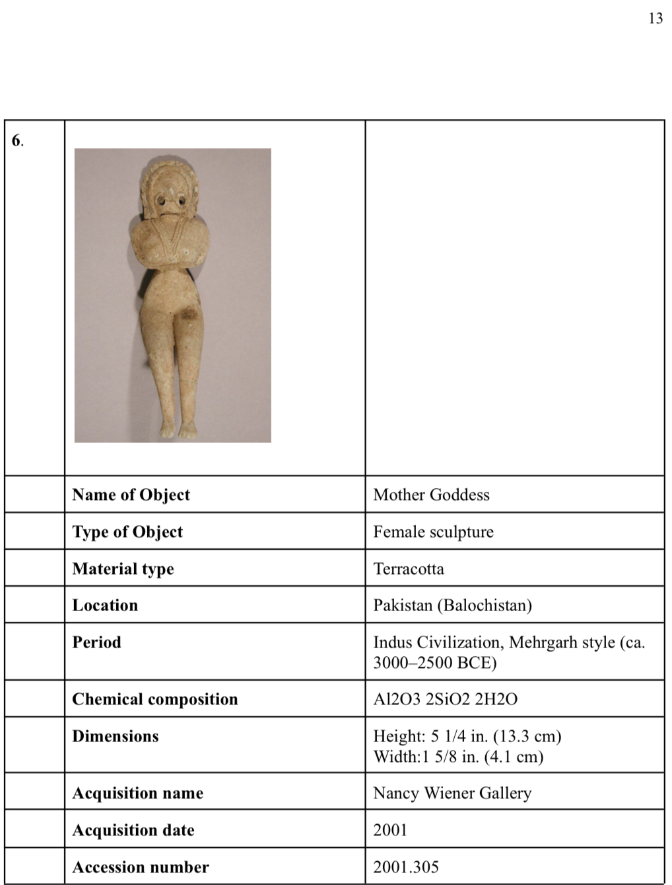

An academic case study conceptualising a museum in Mumbai’s Fort area—from its collection and conservation protocols to staffing, budgets, and visitor circulation.
A collection with a point of view
The theme of prehistoric female figurines was selected through a review of underrepresented museum subjects. The proposed collection spans Egypt, Greece, Mesopotamia, and Pakistan, covering 5000–2500 BCE and materials including limestone, ivory, bone, ceramic, marble, and terracotta.
Building the collection framework
Six artefacts were documented with provenance, acquisition histories, condition reports, and accession numbers. Historical research and international museum standards informed the object records.
Conservation and preparedness
Material-specific protocols drew on Canadian Conservation Institute guidance, British Museum standards, and Durham University limestone conservation protocols. Disaster planning adapted guidance from the Fort Missoula Museum and the American Alliance of Museums.
Planning the institution
The proposal defines staff responsibilities, salaries, funding strategies, and an annual budget of ₹2 crores. It also covers accessibility, educational programming, community engagement, display cases, environmental controls, gallery layouts, lighting, and circulation.
The outcome
A 55-page planning document supported by more than 60 academic references brings collection management, conservation, institutional operations, and physical design into one museum proposal. The proposal considers the relationship between collection care, institutional operations, and visitor access.
Images






